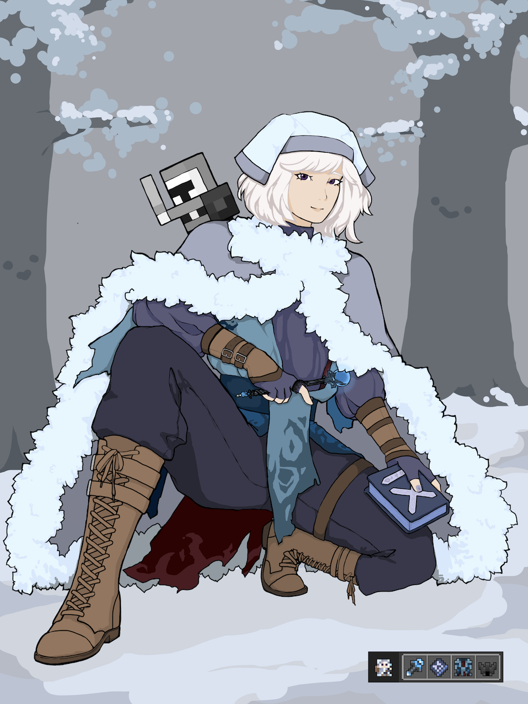

snowland priestess
I made this piece for a character drawing contest from the game Realm of the Mad God. With Photoshop, I depicted one of my priestess characters (in-game skin and equipment pictured in bottom corner) alongside her pet. Within the contest, I won 5th place out of 10.
This was a decently big project for me at the time, as I was not very familiar with digital art. I started with a traditional sketch of a pose, referencing a photo I took of myself to get a feel for the anatomy. At this point, I wasn't too familiar with digital art, so didn't utilize layers for things like shading as I do now. I also hadn't done much work with color, so this was different. Likewise, I wasn't too used to including backgrounds in my illustrations, so this was another experience. Still, I think it came out well, if a bit flat.
Adobe Photoshop; September 2020